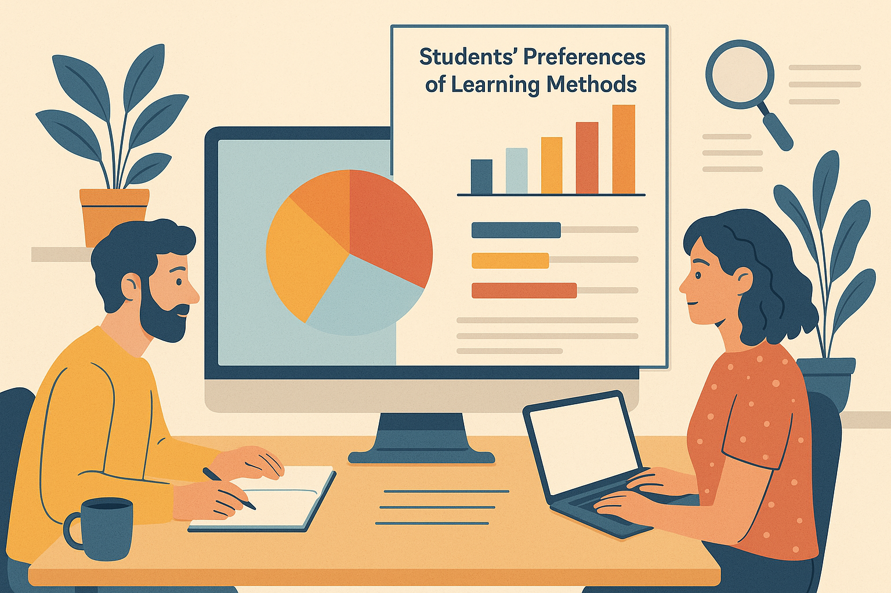

Portfolio All Data Science Quantative Analysis Data Analysis Select category All Data Science Quantative Analysis Data Analysis Predicting Falcon 9 Reusability Data Science Modeling Stock Market Trends through GBM Quantative Analysis  Student Preferences for Learning Methods Data Analysis